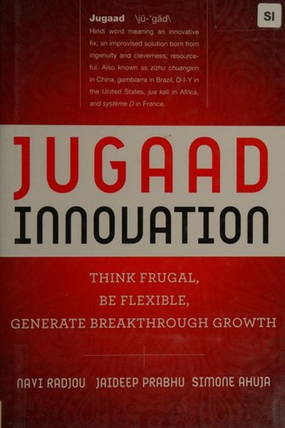

Library › Creativity
Jugaad Innovation — Summary & Key Lessons

Doing more with less is the new competitive edge.
📖 OPEN THE FULL INTERACTIVE BREAKDOWN →🌐 Read it in Hindi, Hinglish, Gujarati, Tamil & 22 more languages — free, with audio.
💡 The Big Idea
Radjou, Prabhu and Ahuja argue that the West's innovation model — big R&D budgets, long timelines, perfect solutions — is being outmaneuvered by 'jugaad': the frugal, flexible, inclusive approach that Indians have perfected out of necessity. Jugaad innovators do more with less: the refrigerator made from clay that cools without electricity, the affordable cardiac surgery that costs a fraction of the Western price, the car engineered for the masses. The book's core claim: in a resource-constrained world, the ability to improvise, adapt and include is not a compromise — it is the next competitive advantage. Jugaad is a mindset, and it can be learned.
🧠 The 6 Key Lessons
Lesson 1: Jugaad Is Not a Hack — It Is a Philosophy of Resourcefulness
Part 1: The Mindset
The authors rescue 'jugaad' from its dismissive meaning (a quick fix, a shortcut) and redefine it as a systematic philosophy: do more with less, embrace constraints as creative fuel, and improvise solutions from available resources. The jugaad mindset has six principles: seek opportunity in adversity, do more with less, think and act flexibly, keep it simple, include the margins, and follow your heart. The lesson: constraints are not obstacles to innovation — they are the raw material. The team with unlimited budget often innovates less than the team with a small budget and a deadline, because necessity is the mother of invention.
📖 Example: The authors cite Mitticool — a clay refrigerator invented by Mansukhbhai Prajapati, a village potter with no engineering degree — that keeps food cool without electricity. A 'limited' innovator solved what well-funded labs hadn't, because the constraint was… Read the full example →
⚡ Do this: Take your current problem and impose an artificial constraint: 'How would I solve this with 1/10th of my current budget?' Force the frugal solution — then note what it teaches.
Lesson 2: Frugal Engineering: The Art of Doing More With Less
Part 2: The Principles
The book's most famous examples are frugal engineering feats: Tata's Nano (a car priced for the masses), Narayana Health's $2,000 heart surgery, GE's low-cost ECG machines for rural India. The pattern: start from the constraint (what can the customer afford? what infrastructure exists?), then engineer backward. Frugal innovation is not cheaper versions of premium products — it is fundamentally redesigned solutions that strip away everything the user doesn't need. The lesson: the most valuable innovation often comes from serving the underserved — the bottom of the pyramid is a laboratory, not a charity case.
📖 Example: Narayana Health performs cardiac surgeries at a fraction of Western costs through volume, standardization and relentless process efficiency — proving that healthcare quality and affordability are not opposites when you redesign from the patient's constraint. Read the full example →
⚡ Do this: Redesign one of your offerings from your customer's constraint backward: what do they truly need, what can they truly pay, what infrastructure do they have? Strip everything else.
Lesson 3: The Inclusive Approach: The Bottom of the Pyramid Is the Next Market
Part 3: The Markets
The authors argue that the future of growth is inclusive: the billions at the bottom of the pyramid — in India, Africa, Latin America — are not just consumers of cheap goods but sources of innovation and scale. Jugaad companies co-create with their customers: the entrepreneur who listens to the village, the company that adapts products for local realities. The lesson: inclusion is not altruism — it is market intelligence. The entrepreneur who designs FOR the underserved learns lessons that translate to every market. Serving the many with the many is the largest opportunity on earth.
📖 Example: The authors show how mobile banking (M-Pesa), solar lanterns and low-cost water purifiers — all designed for the underserved — created industries that later moved upmarket. The bottom of the pyramid was the R&D lab. Read the full example →
⚡ Do this: Interview one 'underserved' customer this month — someone your product ignores. List three constraints they face that you've never considered, and one adaptation your product could make.
Lesson 4: Flexibility Over Perfection: The Improvise-Adapt-Overcome Loop
Part 4: The Process
Western-style planning assumes a predictable world; jugaad assumes an unpredictable one and therefore prizes flexibility. The jugaad process is iterative: try quickly, learn from failure, adapt, and try again — the 'improvise-adapt-overcome' loop. The authors contrast the perfect-plan company (analysis paralysis) with the jugaad company (rapid experiments). The lesson: in a fast-changing environment, speed of learning beats size of plan. The team that ships small versions and improves beats the team that waits to ship the perfect version. Perfectionism is a luxury of stable times; flexibility is the survival skill of ours.
📖 Example: The authors cite how Indian entrepreneurs continuously adapt products for local conditions — the same product gets modified for every region's power supply, language and price point — a rolling wave of iteration that formal R&D processes can't match. Read the full example →
⚡ Do this: Ship a 'good enough' version of something this week — an email, a prototype, a proposal — with a 7-day iteration plan. Note what you learn from real feedback that planning never gave you.
Lesson 5: The Heart and the Gut: Purpose-Driven Innovation
Part 5: The People
Jugaad innovators, the authors find, are not purely rational — they are driven by passion and social purpose. Mansukhbhai the potter, Devi Shetty the cardiac surgeon, the grassroots inventors — all were motivated by seeing a real human problem, not by a market opportunity. The lesson: innovation without purpose runs out of fuel. The mission-driven builder persists through failures that the purely commercial builder abandons. The strongest teams and companies have a 'why' that transcends the balance sheet — and that why is what attracts the collaborators, customers and courage that execution requires.
📖 Example: Devi Shetty's mission — affordable heart care for every Indian — drove him to redesign processes, attract talent and persist against scepticism in ways a purely profit-driven hospital chain never would. The purpose was the engine. Read the full example →
⚡ Do this: Reconnect with your 'why': write the one sentence that describes the human problem your work solves. Post it where you'll see it daily — and test your next decision against it.
Lesson 6: From Jugaad to Systematic Frugal Innovation
Part 6: The Future
The book's closing challenge: jugaad alone — brilliant improvisation — is not enough; it must be systematized into repeatable frugal innovation. The authors call for companies to institutionalize the jugaad mindset: reward frugality, protect experimentation, include the margins, and build cultures that celebrate constraint-driven creativity. The lesson: a single brilliant improvisation is a story; a system that produces improvisations is a moat. The individual version: don't just rely on your moments of genius — build the habits, networks and processes that generate resourceful solutions on demand.
📖 Example: The authors show how companies that 'graduated' from occasional jugaad to systematic frugal innovation — embedding cost-constraint thinking into every team — sustained the edge that their one-hit jugaad moments had only hinted at. Read the full example →
⚡ Do this: Institutionalize one frugal practice this month: a standing 'do more with less' review, a constraint exercise before every new project, or a reward for the team's most resourceful solution.
✅ 5-Step Action Plan
- Solve your current problem with 1/10th the budget — deliberately.
- Redesign one offering from the customer's constraint backward.
- Interview one underserved customer this month.
- Ship one 'good enough' version and iterate within 7 days.
- Institutionalize one frugal innovation practice this month.
⚠️ When This Doesn't Work
Radjou's celebration of jugaad — frugal, flexible Indian innovation — is inspiring — and DeLorean is the warning that frugality without quality is just cheapness: the ultimate jugaad car — innovative, ambitious, built on a shoestring — that collapsed because the shortcuts were visible to every customer. Jugaad works when the constraint is real and the quality survives it; it fails when the shortcut becomes the product. The caveat for every 'jugaad' founder: frugality is a strategy for the problem, never for the solution. Innovation that saves money at the customer's expense isn't jugaad — it's a recall waiting to happen.
💀 The Graveyard Proves It
🚗 DeLorean Motor Company — The Car So Iconic It Needed a Time Machine to Sell. Burn: $175M + founder's reputation. Read the full case study →
💬 Best Quotes from Jugaad Innovation
- “Jugaad is not a shortcut — it is a philosophy of resourcefulness.”
- “Constraints are not obstacles to innovation; they are its raw material.”
- “The bottom of the pyramid is a laboratory, not a charity case.”
Interactive version: mark lessons as read, listen in your language, share quote cards.